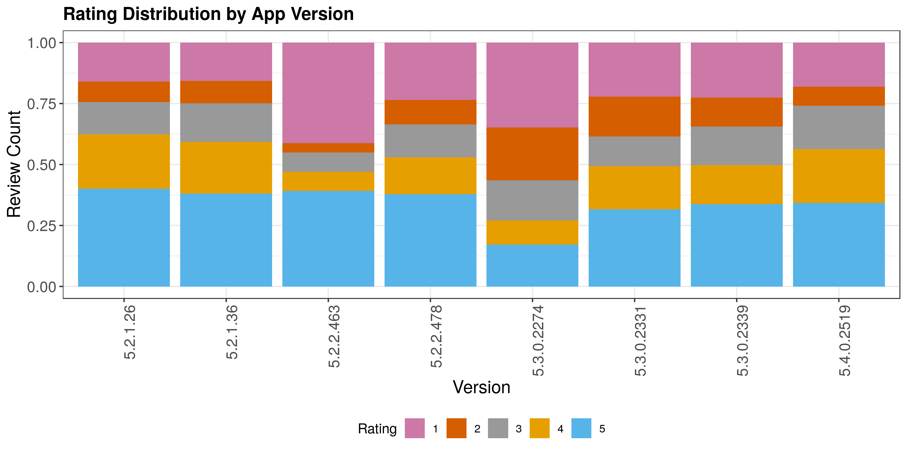
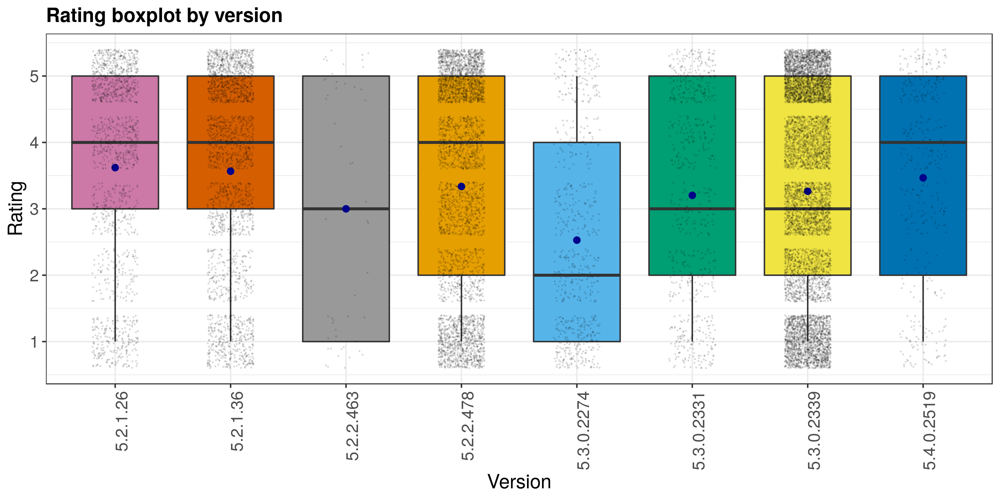
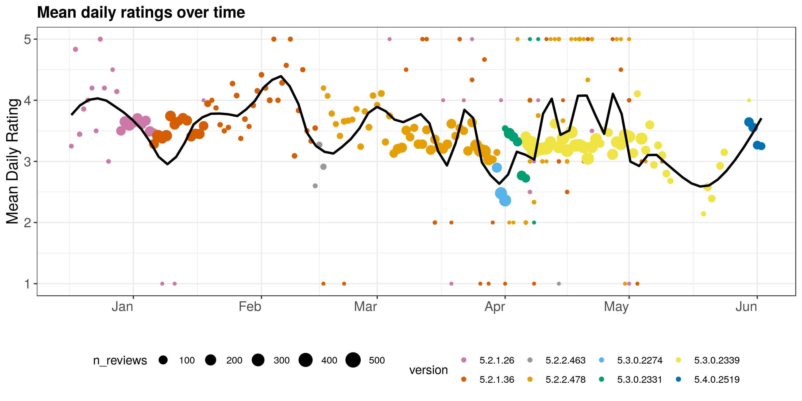

Emergent
The proliferation of smartphones attracts more and more software developers to build mobile applications. To maintain a competitive edge, developers must routinely test and improve apps and address issues that arise. Timely and constructive feedback from users becomes crucial for developers to fix bugs, implement new features, and improve user experience quickly.
App reviews have rich content, and can provide developers with feedback on the app’s performance, almost in real time. However, manual analysis of reviews is time consuming, and automated analyses can suffer from issues such as noise in spelling/grammar, short text length, and more.
Our Product
Some previous products focus on identifying users’ major concerns or preferences from app reviews. However, the issues are neither identified automatically nor studied online. There also exists some products focusing on analyzing the parts of apps that are loved by users. To improve on the previous efforts, our work aims to help developers detect the emerging issues automatically and dynamically. Moreover, we present app issues in an interactive and comprehensible manner.
Exploratory Data Analysis
About the data set
Our data set contains user reviews on Google Play for Viber. Below is a sample of the data set, where:
Rating: star ratings on Google Play, ranging from 1 - 5, the higher the better.
Review: user review text.
Date: in the format of month-date.
Version: app version that the user was on at the time of writing the review.
Review count by app version
Our data set has 8 distinct app versions and some have more reviews than others. This is likely due to the time period when this data was pulled. For example, if the data was pulled when version 5.3.0.2339 was in production, this version would have the most number of users, hence the most number of reviews.
Therefore, it makes sense to look at the rating distribution for each version by percentage rather than by count.
Rating distribution by app version
From distribution of ratings as displayed in the stacked bar chart below, it is clear that some versions are better than others. If rating 4 and 5 are considered as “good” and the rest as “bad”, we can see that Viber went through a “rocky” release of version 5.3.0, when good ratings were only about 26%, and the rest being bad ratings. This is a major dip from version 5.2.0. However, with the next update (version 5.3.0.2331), issues could have been fixed, resulting in much better ratings for the app.
Besides, version 5.2.2.463 also seems to be a ‘buggy’ version with almost 40% of one-star ratings.
This is also seen in the boxplot below, where these two versions show the lowest median and average ratings (as indicated by the blue dots).
Review count over time by app version
With the review count over time chart, we could see that, fortunately, the ‘problematic’ versions 5.2.2.463 and 5.3.0.2274 were fixed quickly, within days, with the newly updated versions that followed.
Viber seems to have a new major release every quarter, and small updates in between. For example, during the first half of the year in our dataset, we observed two major app releases, version 5.2.0 in January and version 5.3.0 in April.
For almost all app versions, we observed a spike in reviews right after the release of the new version. This volume spike in user reviews also presented a good opportunity for app developers to collect user feedback and push updates if there were any issues.
App ratings over time
Finally, we examined Viber’s mean daily ratings over time. Once again, it was clear that there were major dips in user satisfaction when version 5.2.2.463 (grey) and 5.3.0.2274 (blue) were released, but the app managed to recover with the new updates.
The key question for developers would be, how can issues be identified quickly from user reviews so that they can be fixed before the issues are more widespread?
Interactive Topic Search
LDA
Latent Dirichlet Allocation (LDA) is a generative probabilistic model of a collection of composites made up of parts. In terms of topic modeling, the composites are documents and the parts are words and/or phrases. LDA is an unsupervised machine learning method that helps us discover hidden semantic structures, allows us to learn topic representations.
Below we visualized the results from our best LDA model from the reviews for the problematic app version 5.3.0.2274. We present two distinct topics, with the top terms for each. With this visualization, it is now crystal clear what the issue was for this app version - The vibration will not turn off!
Each of the topics can also be visualized with the following wordclouds, which gives developers a quick snapshot of the issues. While the first topic is about the vibration problem with this new app update, the other is about the great ways Viber was good for other users, with some mentioning of other smaller problems.

UMAP
Uniform Manifold Approximation and Projection (UMAP) is a dimension reduction technique that can be useful for visualizing multi-dimensional data on a 2D plane.
However, one challenge with unsupervised methods, where we lack labelled data, is that it is difficult to validate the results. We have addressed this challenge by combining the predictions from our LDA model with the UMAP 2D projections. While UMAP visualizes our sophisticated and unstructured app review data using a scatterplot on a 2D plane, the LDA model was able to validate UMAP's clusters by colorcoding these points using its predictions.
Developers can now easily spot how prevalent the vibration issue was with this new update - Virtually, half of the reviews were about this problem! This new insight makes the next action apparent before the issue hurts the experience of even more users.
Interactive topic evolution visualization
Word2Vec uses a two-layer neural net to arrive at vector representations (word embeddings) for every word in a corpus based on its context. Embeddings can carry semantic meaning, and semantically similar words will be “close” in vector space.
This interface allows developers to see the evolution of a topic for a specific app. The top graph shows static information about the app overall, including the mean rating per day and the number of reviews written per day. The bottom graph shows the relevance of the selected query for reviews written for the selected app. Finally, cosine similarities between the query and all reviews are computed and used to list the most relevant reviews.
Demo
To view a brief demonstration of the full range of features in our interactive application, check out the video below:
Conclusion
Listen to your customers, they say. Needless to say, keeping track of the user sentiment is critical to every app’s success in the highly competitive ecosystem today. Our project has presented a novel solution with multiple complementary methods to help developers identify automatically any potential issues that arise from a limited number of user reviews on the Google Play Store.
While LDA is instrumental in identifying the key topics from app reviews, UMAP helps uncover clusters of reviews through a scatterplot visualization, and group them into the LDA predicted topics, to help developers visualize the degree of prevalence for each issue. Our Word2Vec tool helps developers monitor their app’s performance and issues over time by using the key words that matter to them. Given an unsupervised problem, by using multiple methods, we were able to validate our results though thorough cross-checking so the developers can be confident of the insights presented.
This solution does not end here. It can be a standalone solution that takes in user reviews and outputs useful insights for developers to keep on improving their apps. It can also be integrated with existing and popular app monitoring services in the market such as App Annie for a richer user experience for developers. We can also enhance our solution with insights on app performance by device, network, and country - all from user reviews!
Github
Read more about our product, data used, references and lessons learned during development.
About Us


Yubo Zhang (CEO)
Data scientist with extensive food and biology background. Currently lives in Stuttgart, Germany.
Samir Datta (CEO)
Data scientist with a background in neuroscience living in San Francisco, California.
Thu Nguyen (CEO)
Data Scientist, currently living in Mountain View, California.